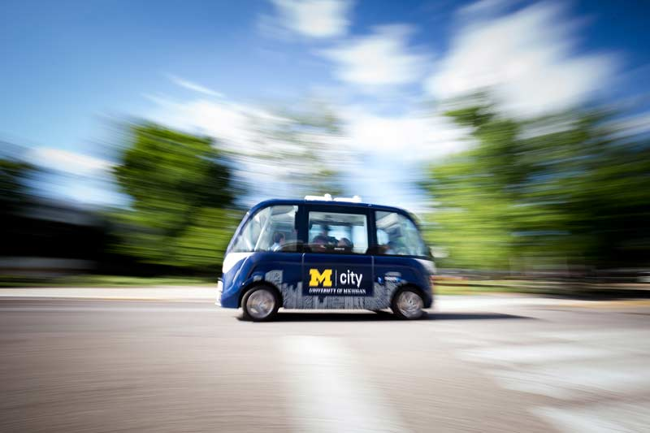

Social Shifts
Moving society to next-generation mobility systems – and heading off unintended consequences – will take more than technology.
The Mcity Driverless Shuttle research project began on North Campus this spring. It’s the first research project in the U.S. focusing on autonomous vehicle user behavior. The shuttle ferries students, staff and faculty to the North Campus Research Complex from more distant parking. Its cameras record what’s going on in and around the vehicle.
We’re not focusing on the technology with the shuttle, but on understanding consumer acceptance,
said Carrie Morton, Mcity deputy director. We’re studying how passengers and others on the road experience this. Questions like: How does their trust change over time? How do pedestrians react? Are other vehicles impatient?
Laws
Driverless cars will likely shift fault for accidents from drivers to auto manufacturers. Should the machines be held to a higher standard than humans? The new class of vehicles will also collect more data than we’re used to. What does that mean for privacy?
- Law and Mobility Project: Collaboration between Michigan Law School, Mcity and the Michigan Governor’s Office
- Michigan Journal of Law and Mobility: Provides an outlet for scholarship and analysis
City Design
Through the Center for Connected and Automated Transportation, a $2.5-million, U.S. Department of Transportation-funded effort, UMTRI is studying the shift by exploring mobility policy; design of advanced roadways, intersections and bridges; connected and automated transportation systems control and operations; and public acceptance of self-driving vehicles.
Business Models
One of the biggest opportunities driverless cars will bring is wheels for those who don’t have access to reliable transportation – the elderly, disabled and economically disadvantaged.
We need to think about accessibility,
Morton said. How do we take this unique moment in time when we’re re-envisioning transportation from the ground up to make sure we design it to move all society forward, and that means thinking about socioeconomic mobility, access to healthcare, to grocery stores – all of those things.